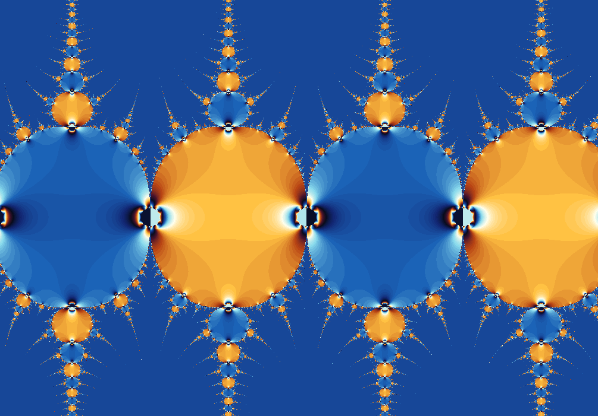

Fractal gallery
Fixed Point Sine
Where repeated sine settles, wanders, or refuses to decide.
A fixed-point fractal asks a quieter question than escape-time fractals: if we keep applying the same function, do we settle into a stable value?

What to try first
Pick a point in a calm region and enable orbit display. The path should move toward a stable destination.
Move toward a color boundary. Those are the places where convergence becomes fragile or slow.
Adjust the minimum step threshold. A smaller threshold asks the orbit to prove convergence more carefully.
Mathematical notes
Fixed points of sine
wxChaos iterates \(z_{n+1}=\sin(z_n)\) and watches when the step size \(|z_{n+1}-z_n|\) becomes small. A true fixed point satisfies \(z=\sin(z)\). In practice, the renderer colors how quickly each starting point appears to settle.